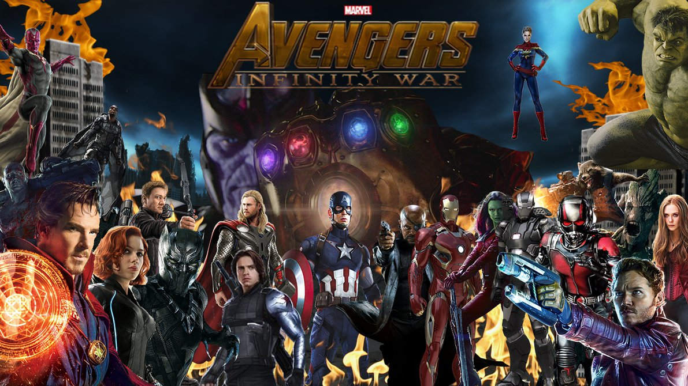

Movies
Choose the movie
Avengers: Infinity war

- Genre:
- Action | Adventure | Fantasy | Sci-Fi
- Release date:
- 3 May 2017
- Actors:
- Tessa Thompson
... Valkyrie (rumored)
Chris Hemsworth
... Thor
Tom Hiddleston
... Loki
Scarlett Johansson
... Natasha Romanoff / Black Widow
Karen Gillan
... Nebula
Elizabeth Olsen
... Wanda Maximoff / Scarlet Witch
Tom Holland
... Peter Parker / Spider-Man
Chris Pratt
... Peter Quill / Star-Lord
Benedict Cumberbatch
... Dr. Stephen Strange
Pom Klementieff
... Mantis
Zoe Saldana
... Gamora
Robert Downey Jr.
... Tony Stark / Iron Man
Dave Bautista
... Drax
Chris Evans
... Steve Rogers
Gwyneth Paltrow
... Pepper Potts
- Short description
- The Avengers must unite once again to fight the Mad Titan Thanos as he attempts to locate the last of the Infinity Stones.
Justice League
- Genre:
- Action | Adventure | Fantasy | Sci-Fi
- Release date:
- 16 November 2017 (Russia)
- Actors:
-
Gal Gadot... Diana Prince / Wonder Woman
Jason Momoa... Arthur Curry / Aquaman
Robin Wright... Antiope
Amy Adams... Lois Lane
Amber Heard... Mera
Ezra Miller... Barry Allen / The Flash
Affleck... Bruce Wayne / Batman
Connie Nielsen... Queen Hippolyta
Henry Cavill... Clark Kent / Superman
Diane Lane... Martha Kent
Kiersey Clemons... Iris West
Jeremy Irons... Alfred Pennyworth
Ciarán Hinds... Steppenwolf
Billy Crudup... Henry Allen
J.K. Simmons... Commissioner Gordon
- Short description
- Fueled by his restored faith in humanity and inspired by Superman's selfless act, Bruce Wayne enlists the help of his newfound ally, Diana Prince, to face an even greater enemy. Together, Batman and Wonder Woman work quickly to find and recruit a team of metahumans to stand against this newly awakened threat. But despite the formation of this unprecedented league of heroes-Batman, Wonder Woman, Aquaman, Cyborg and The Flash-it may already be too late to save the planet from an assault of catastrophic proportions.
The Star
- Genre:
- Animation | Adventure | Comedy | Family | Fantasy
- Release date:
- 17 November 2017 (USA)
- Actors:
- Steven Yeun... Bo the Donkey (voice)
Kristin Chenoweth... Abby the Mouse (voice)
Zachary Levi... Joseph (voice)
Gina Rodriguez... Mary (voice)
Tyler Perry... Cyrus the camel (voice)
Christopher Plummer... King Herod (voice)
Keegan-Michael Key... Dave the Dove (voice)
Patricia Heaton... Edith the Cow (voice)
Kris Kristofferson... Old Donkey (voice)
Ving Rhames... Thaddeus the Dog (voice)
Anthony Anderson... Zach the Goat (voice)
Mariah Carey... Rebecca the Hen (voice)
Oprah Winfrey... Deborah the Camel (voice)
Gabriel Iglesias... Rufus the Dog (voice)
Aidy Bryant... Ruth the Sheep (voice)
- Short description
- In Sony Pictures Animation's THE STAR, a small but brave donkey named Bo yearns for a life beyond his daily grind at the village mill. One day he finds the courage to break free, and finally goes on the adventure of his dreams. On his journey, he teams up with Ruth, a lovable sheep who has lost her flock and Dave, a dove with lofty aspirations. Along with three wisecracking camels and some eccentric stable animals, Bo and his new friends follow the Star and become accidental heroes in the greatest story ever told - the first Christmas.
Wonder

- Genre:
- Drama
- Release date:
- 16 November 2017 (Russia)
- Actors:
- Julia Roberts... Isabel Pullman
Jacob Tremblay... Auggie Pullman
Crystal Lowe... Jullian's Mom
Owen Wilson... Nate Pullman
Mandy Patinkin... Mr. Tushman
Izabela Vidovic... Via Pullman
Ali Liebert... Ms. Petosa
Noah Jupe... Jack Will
Emma Tremblay... Michelle
- Short description
- Based on the New York Times bestseller, WONDER tells the incredibly inspiring and heartwarming story of August Pullman. Born with facial differences that, up until now, have prevented him from going to a mainstream school, Auggie becomes the most unlikely of heroes when he enters the local fifth grade. As his family, his new classmates, and the larger community all struggle to discover their compassion and acceptance, Auggie's extraordinary journey will unite them all and prove you can't blend in when you were born to stand out.
Return to the top
Home